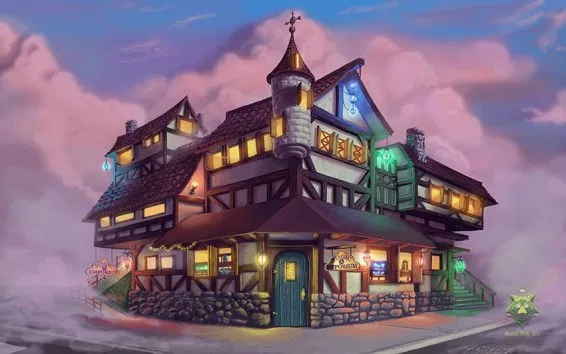

Fantasy Emporium fue fundado por Luna la Hechicera en el corazón del Bosque Encantado. Nuestra misión es proporcionar artículos mágicos de alta calidad a los aventureros.
Creemos en la magia sostenible, utilizando materiales ecológicos para fabricar nuestros artículos. Nuestras pociones son preparadas con cuidado, garantizando que sean seguras tanto para los aventureros como para el medio ambiente.
